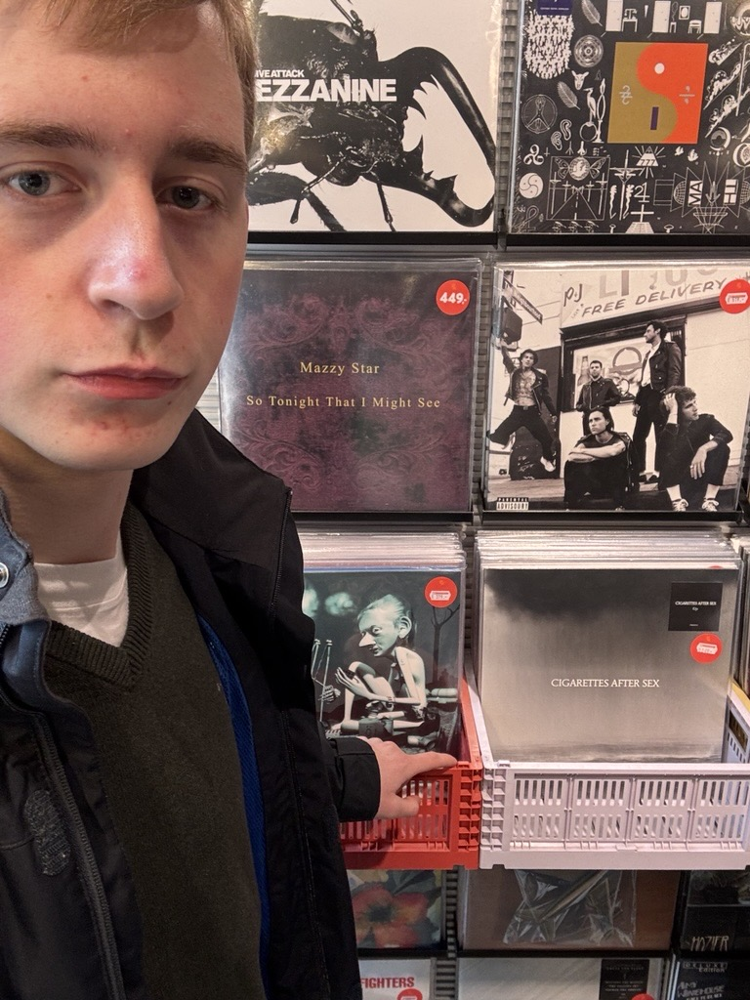
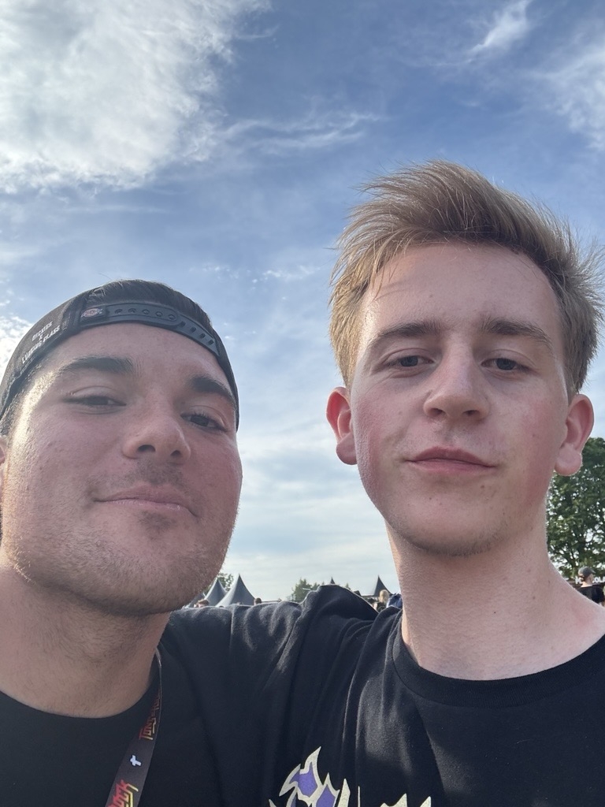
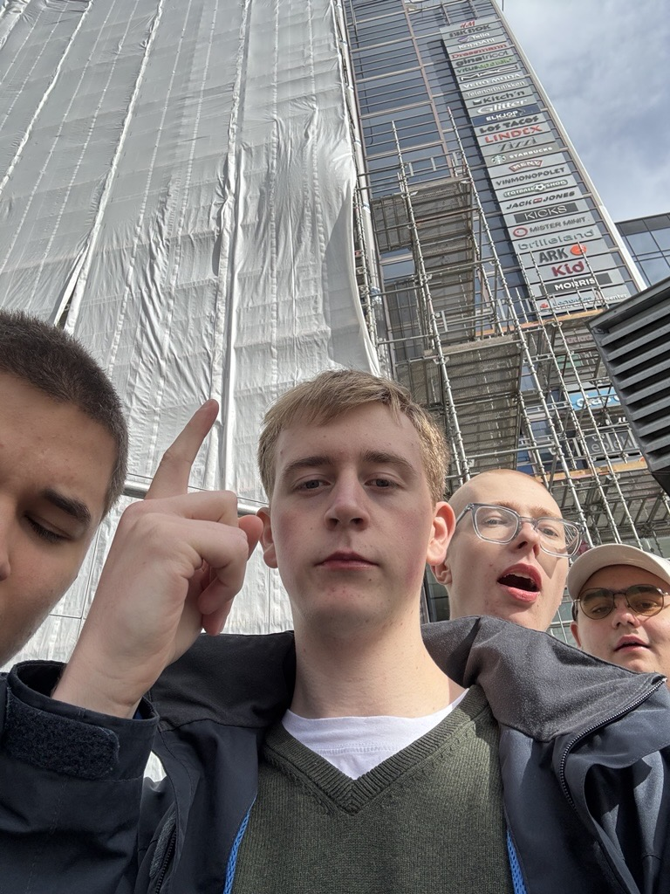
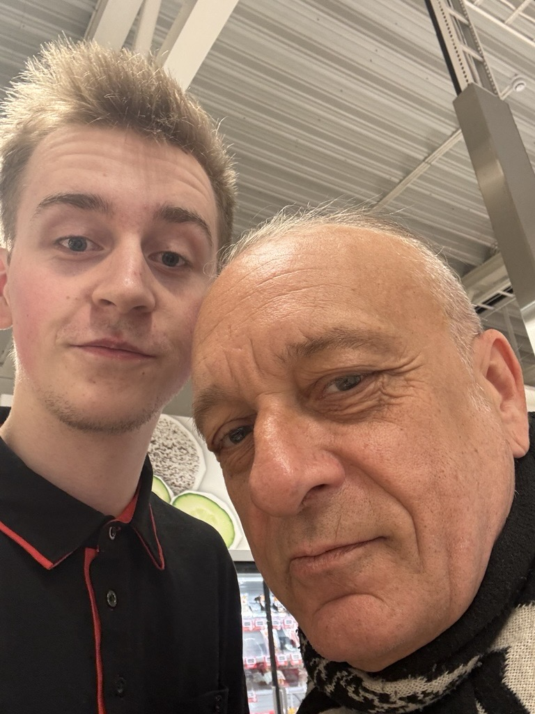

Vinteren er kald, så er jeg hjemme og spiller.
Våren er fin, så jeg går ute og besøker vennene mine.
Sommeren er varm, så jeg går meg turer og drar på konserter.
Høsten varierer, så jeg blir både inne og drar til venner i blant.



